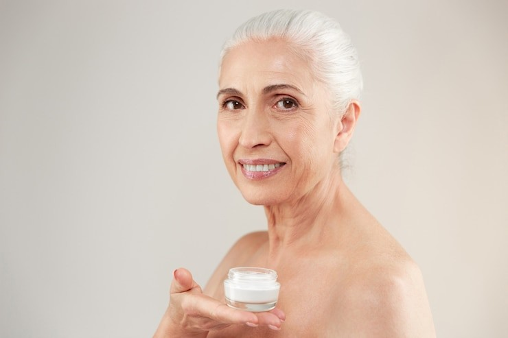

The Churchill Center
Feel Lighter, Brighter, and Better with a Complete Body Detox Cleanse
Read moreShow less
Do you feel tired, sluggish, or just not quite like yourself? The modern world constantly bombards our bodies with toxins, from food to environmental factors, leaving us feeling drained and unbalanced. If you’ve been searching for a way to hit the reset button and refresh your body, a complete body detox cleanse might be the answer you’ve been looking for. Detoxification is not just about losing weight or looking better it’s about feeling lighter, brighter, and better in your body. By cleansing your system, you can reset your body’s natural processes, boost energy, and reclaim the vitality you deserve. The right detox cleanse can make all the difference in how you feel each day. But before diving in, let’s explore why a detox might be your key to lasting health and well-being.
Why a Detox Cleanse is Essential for Your Health
The idea of detoxing has become increasingly popular, but what does it actually mean? A complete body detox cleanse is about eliminating toxins, impurities, and waste that can build up in your system over time. These substances may negatively impact your immune system, metabolism, and overall vitality. A detox cleanse goes beyond just dietary changes it helps reset your body’s natural rhythm, giving it the chance to recover, heal, and flourish.
How a Detox Cleanse Works
A well-structured detox cleanse combines several methods that support your body’s natural detoxification processes. These methods include drinking plenty of water, consuming nutrient-rich foods, and sometimes incorporating supplements to help boost the body’s natural ability to flush out toxins. The process involves helping your liver, kidneys, and other organs function at their best by giving them the nutrients and support they need to cleanse the body thoroughly.
The Benefits of Detoxing
After a complete body detox cleanse, many people report feeling better both mentally and physically. From clearer skin to improved digestion, the benefits can be quite noticeable. Some of the most common benefits include:
Read moreShow less
- Increased Energy: Detoxing can remove the toxins that slow down your metabolism and energy production, making you feel more awake and alert.
- Clearer Skin: By clearing out impurities, you can enjoy a healthier, glowing complexion.
- Enhanced Digestion: A cleanse can help reset your digestive system, leading to fewer bloating and discomfort.
- Improved Immune Function: A detox helps to boost your body’s defense systems, reducing the likelihood of illness.
- Weight Loss: A detox can jumpstart your weight loss by flushing out excess water weight and reducing inflammation.
Detoxification and Glutathione: Your Body’s Natural Defender
One powerful detox agent your body naturally produces is glutathione. Known as the “master antioxidant,” glutathione plays a major role in protecting your cells from oxidative stress and helping your body detoxify effectively. By incorporating detox methods that support the production of glutathione, you can enhance your body’s natural detoxification abilities, leading to even greater results.
A Detox Cleanse Can Support Mental Clarity
It’s not just your body that benefits from a complete body detox cleanse your mind can also experience significant improvement. By eliminating toxins and reducing inflammation, many people find that they feel mentally clearer, sharper, and more focused. The mental fog that can accompany poor diet, stress, or accumulated toxins may lift, leaving you feeling more present and capable of tackling your day-to-day tasks. In addition, glutathione detoxification plays a key role in supporting brain health, as it helps neutralize free radicals that could be impairing cognitive function. With better clarity and a refreshed body, you can approach life with renewed purpose and energy. A detox cleanse doesn’t just rejuvenate your body it revitalizes your mind too.
In The End:
If you’ve been feeling sluggish, weighed down, or not quite yourself lately, it may be time for a complete body detox cleanse. The benefits of detoxification can help you feel rejuvenated, energized, and healthier than ever before. At The Churchill Centers, we specialize in personalized detox programs that promote overall health, vitality, and well-being. Whether you’re looking to detox through IV treatments or body cleanses, we’re here to guide you through every step. Start your detox journey today and experience the difference for yourself. Your body deserves the care and attention that comes with a complete detox.
Read moreShow less
Ready to experience the life-changing benefits of a body detox cleanse? Contact The Churchill Centers today to begin your transformation!